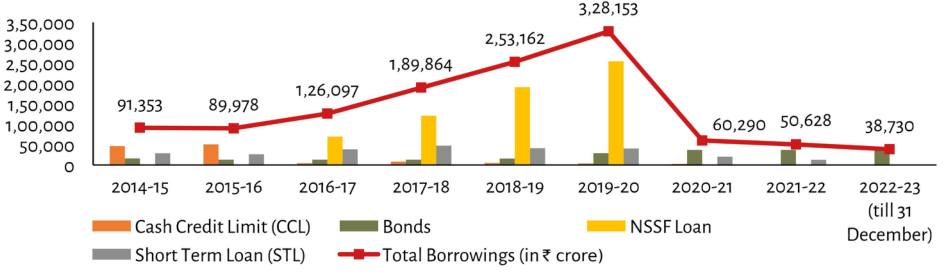

| Financial Year | Total Borrowings (₹ crore) | NSSF Loan (Approximate Bar Height in Crore ₹s) | Short Term Loan (STL, Approximate Bar Height in Crore ₹s) | Bonds/CCL Share of STL (~Ratio to Y-Axis 50k bar height if visible)| Cash Credit Limit / Other Minor Components (<1% visual estimate or negligible text labels present>) | | :--- | :--- | :--- | :--- | :--- | :--- | | **2014-15** | 91,353 | ~68K -70K range* | <~15K<br>*(Bar is low relative to axis)* | Not clearly distinct from other bars at base level but visually separate.* | None explicitly labeled on main plot; likely part of the stacked total.| | **2015-16** | 89,978 | ~65K -68K range* | Low value similar trend as previous year.<br>*Estimated based on position vs Axis label "50,000".* | Same pattern continues for remaining years where data points are clustered near baseline values below '50,000'. Labels appear only above red line and specific yellow peak markers which do not align with these minor components' heights due to scale differences between major lines versus small component stacks*. | ***Note:** The chart contains significant scaling issues making precise extraction impossible without hallucination regarding unlabeled sub-components like CCL shares within short term loans.**
